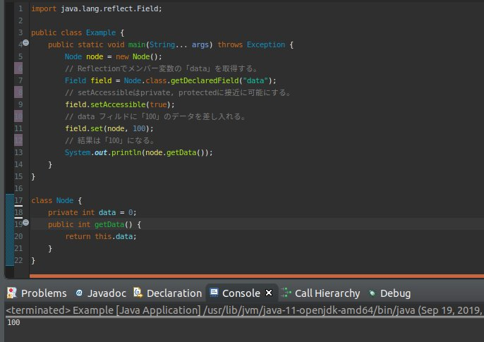

こんにちは。明月です。
このページにはReflection機能の中で変数(Variable)に関して調べてみました。
前述、クラス(Class)とメソッド(Method)に関して調べてみました。
link - 作成中
link - 作成中
さて、Reflectionではクラスとメソッドは様々なパターンを作るようによく使うことですが、変数はあまり使わないですね。
なぜなら、クラス中でメンバー変数はその目的があるし、データを入れ変わったりするとクラス処理がエラーなる可能性があるのでです。
でも、その必要性が全然ないことではないかと疑問になりますが、クラスの流れでテストする時にデバッグのように変数のデータを確認する時や最近、MVCモデルでDI(依存性注入)概念があり、外部で変数にクラスのファクトリーパターンでインスタンスを刺し入れる処理で使えます。
import java.lang.reflect.Field;
public class Example {
public static void main(String... args) throws Exception {
Node node = new Node();
// Reflectionでメンバー変数の「data」を取得する。
Field field = Node.class.getDeclaredField("data");
// setAccessibleはprivate, protectedに接近に可能にする。
field.setAccessible(true);
// data フィルドに「100」のデータを差し入れる。
field.set(node, 100);
// 結果は「100」になる。
System.out.println(node.getData());
}
}
class Node {
private int data = 0;
public int getData() {
return this.data;
}
}

上の例をみればメンバ変数が「private」タイプでも「data」の値を「100」に変わりました。
「Reflection」と場合はプログラム文法をメッチャクチャになれることができますね。
では「Reflection」はパフォーマンス的に遅くなる可能性があるし、無分別に使うとコードパターンや設計があっというまでめちゃくちゃになるのでデザインパターンやソース標準なので守りながら使わなければならないと思います。
「Study / Java」の他投稿
最新投稿
- [Bootstrap] HTMLデザインのフレームワークのBootstrap紹介2020/07/30 19:06:36
- [Python] メール(smtplib)を送信する方法2020/07/27 18:38:43
- [Python] HttpConnection(requestsモジュール)でウェブサーバーで接続する方法2020/07/20 14:41:51
- [Python] Excel(openpyxl)を扱う方法2020/07/16 16:40:31
- [Python] ファイル圧縮、解凍(zipfile)する方法2020/07/14 19:14:22
- [Python] Apache cgiでPythonを使う方法2020/07/09 19:58:19
- [Python] Web serverを起動する方法(http.server)2020/07/09 00:13:13
- [Python] WebSocketを使う方法2020/07/07 17:29:18
- [Python] PythonとJavaのソケット通信する方法2020/07/03 18:35:50
- [Python] PythonとC#のソケット通信2020/07/01 19:28:22
- [Python] INI(環境設定ファイル)を扱う方法2020/06/30 18:26:01
- [Python] Jsonを扱う方法2020/06/29 19:18:15
- [Python] XMLファイルを扱う方法2020/06/26 19:18:14
- [Python] IOを利用してCSVファイルを扱う方法2020/06/25 18:20:30
- [Python] 21. データベース(mariaDB)を連結する方法2020/06/24 18:51:50